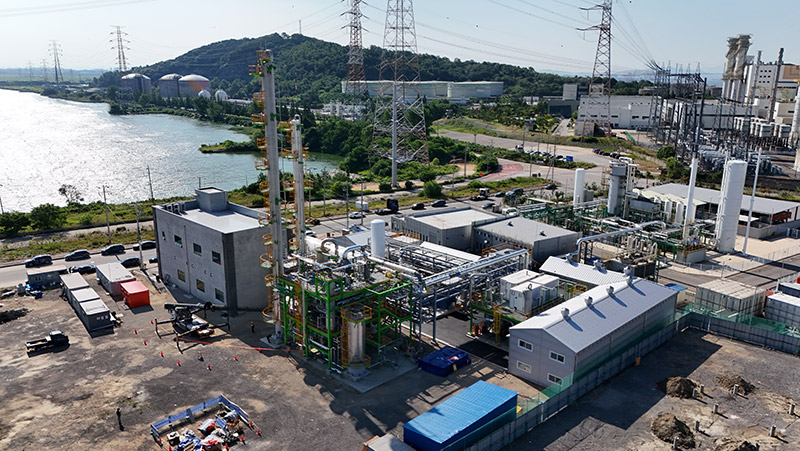

회사개요·연혁
에니스는 토양·지하수 정화와 반입정화센터 사업을 기반으로 탄소 포집·활용 사업을 추진합니다.

자본금 30억 원 · 매출액 257억 원(2023년, 추정치) · 신용평가등급 A+(2023년) · 보유 특허 15건 · 면허·업종 토양정화업 · 지하수정화업 · 엔지니어링사업 · 건설업(토목) · 폐기물종합재활용업
서울사무소 서울시 송파구 정의로7길 13 힐스테이트에코송파 3F · 본사·반입정화센터·기업부설연구소 경북 영천시 북안면 유하큰길 43 · 논산 반입정화센터 충남 논산시 은진면 동산산업단지로 124-16 (041-742-2214~5) 출처: ㈜에니스 회사소개서 2024년판(PDF)